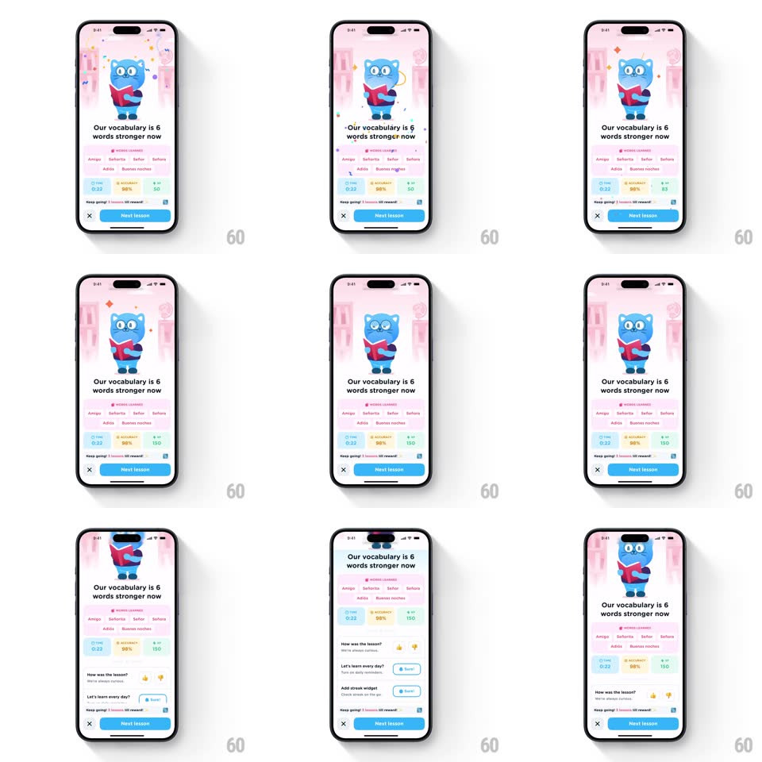

Media
Frame-by-frame

Rebuild this interaction 1:1: Airlearn's lesson recap screen - a pink-themed summary fades in with the cat mascot holding a book, shooting confetti, ticking stat cards (time, accuracy, XP), and a scrollable feedback section that slides up from the bottom.

Rebuild this interaction 1:1: Airlearn's lesson recap screen - a pink-themed summary fades in with the cat mascot holding a book, shooting confetti, ticking stat cards (time, accuracy, XP), and a scrollable feedback section that slides up from the bottom. ## Integration Integration: stack-agnostic spec - springs given as stiffness/damping, timed motions as duration + curve; map every value to your framework and animation library of choice. ## Scene Mobile screen, soft pink background with faint bookshelf illustration. Blue cat mascot holding a red book, headline "Our vocabulary is 6 words stronger now", a "WORDS LEARNED" chip row of word pills (Amigo, bailaría, Adiós, Buenas noches...), three stat cards (TIME 0:23, ACCURACY 98%, XP 150), a "Keep going!" progress strip, and a bottom bar with close X and blue "Next lesson" button. Below the fold: a "How was the lesson?" feedback section with emoji reactions and streak-widget cards. ## Motion spec Pattern: celebration entrance + count-up stats + bottom-sheet scroll. - Screen fades in from white (300ms); confetti shoots from the top corners inward (~40 pieces, pink/yellow/purple, ~1.4s). - Stat cards count up (time to 0:23, accuracy to 98%, XP to 150; ~900ms ease-out, staggered ~100ms). - The recap sheet then scrolls: the whole content column slides up to reveal the feedback section (scroll-driven, content under a fixed bottom bar); word chips and stats move with the scroll. - Bottom bar (X + Next lesson) stays pinned during scroll. ## Calibration - Confetti originates from the top corners aimed inward-down, not from screen center. - The scroll is user/scroll-driven after the entrance - stats do not re-animate on scroll. ## Reduced motion Fade-in with final values; no confetti; scroll works normally. ## Don't miss - The word chips show the actual learned words in two staggered rows, tinted pastel. - The pinned bottom bar keeps the close X left and Next lesson button right at all times.